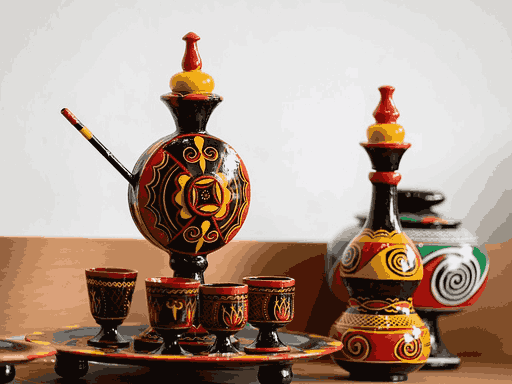
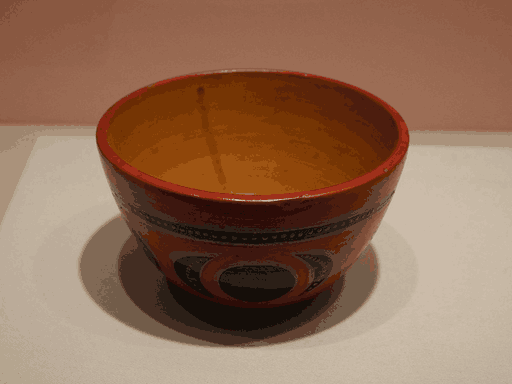
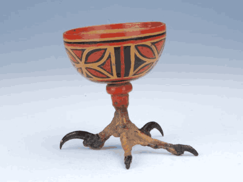
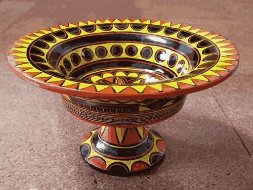
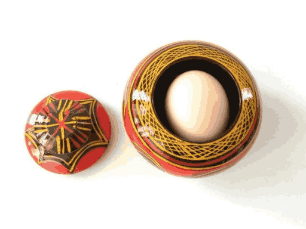
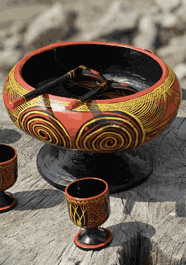

黑红黄的古老交响
彝
族漆器是彝族传统手工艺的瑰宝，已有两千多年的历史。它以木胎为基础，涂以大漆，再用黑、红、黄三色彩绘，形成独特的艺术风格。
在彝族文化中，这三种颜色具有深刻的象征意义：黑色代表土地和尊贵，红色象征火焰和生命，黄色寓意光明和美好。
彝族漆器种类繁多，包括餐具、酒具、茶具、首饰盒等，每一件都经过数十道工序精心制作，既是实用器皿，也是艺术品。

数十道工序，数月方能完成
选用杜鹃木、桦木等优质木材，经干燥处理后，由木工车旋或手工雕刻成碗、盘、杯等器型。胎体要求质地坚硬、纹理细腻。
用生漆调和瓦灰、石膏粉等，填补木胎表面的孔隙和裂纹。待干后反复打磨，使表面光滑平整。此工序需重复多次。
将天然大漆均匀涂刷在胎体上，放入阴房（湿度80%以上）晾干。每涂一层需晾数日，一般要涂5-7层，耗时一个月以上。
用矿物颜料调制黑、红、黄三色漆，以毛笔在器表绘制传统纹样。常见图案有日月星辰、山川河流、花鸟虫鱼、几何图形等。
最后一道工序，用细砂纸、木炭粉反复打磨，再用手掌蘸植物油推擦，使漆面光亮如镜，手感温润如玉。

彝族最常用的餐具，有高足碗、浅口碗等多种款式。碗内常绘有太阳纹、水波纹，外壁装饰几何图案。使用漆碗吃饭，既环保又增添食欲。

小巧精致的饮酒器具，有单耳杯、双耳杯、高脚杯等。杯身常绘有鹰爪纹、火镰纹等彝族特色图案，是待客和祭祀的必备品。

盛放食物的圆盘或方盘，盘面宽阔，适合摆放荞麦饼、坨坨肉等传统食物。盘边常绘有连续的几何纹样，美观大方。

女性存放首饰的精致小盒，盒盖内侧常绘有精美的花卉图案。打开盒子，仿佛开启一个小小的艺术世界。
圆形或放射状图案，象征光明、温暖和生命力。彝族崇拜太阳，认为太阳是万物的源泉。
模仿鹰爪形状的锯齿纹，代表力量、勇敢和高贵。鹰是彝族的图腾之一，被视为神的使者。
连续的波浪线条，象征江河湖海，寓意生命之源和生生不息。也代表着彝族人对水的敬畏。
由多个三角形组成的几何图案，象征山峰和稳定。三角形在彝族文化中代表坚固和永恒。
马缨花、索玛花等彝族喜爱的花卉图案，象征美丽、爱情和幸福。常用于女性用品的装饰。
模仿古代取火工具火镰的形状，象征火的崇拜。火在彝族文化中具有神圣的地位。
彝族漆器不仅是日常用品，更是彝族文化的重要载体：
彝族漆器色彩对比强烈，构图饱满，纹样古朴，具有极高的艺术欣赏价值。它融合了绘画、雕刻、漆艺等多种技艺，是民族艺术的结晶。
大漆具有防腐、防潮、耐酸碱的特性，使漆器经久耐用。使用漆器盛放食物，无毒无害，有益健康，体现了古人的智慧。
漆器上的纹样记录了彝族的历史传说、宗教信仰和生活场景，是研究彝族文化的珍贵资料。每一件漆器都是一部立体的史书。
在彝族社会，精美的漆器是重要的礼品和嫁妆。赠送漆器表示尊重和友谊，使用漆器待客体现主人的诚意和地位。
